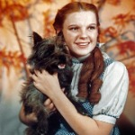
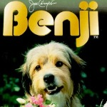

Air Bud is a classic American Family Comedy about a dog who plays sports. The original portrayal was done by a golden retriever named Buddy, which they named the movie after. Buddy also stared in the popular TV Sitcom "Full House" as the family dog, Comet. Buddy was nominated for two Kid's Choice Awards during his lifetime and the Air Bud franchise went on to create a total of 11 movies.

The Wizard of Oz -Terry "Toto"
Terry was a female Cairn Terrier performer who appeared in many different movies, most famously as Toto in the film The Wizard of Oz. Starring alongside the likes of Judy Garland and Shirley Temple, Terry was featured in 16 different films during her lifetime. Terry now has a memorial in the Hollywood Forever Cementary in Los Angeles, where she has been effectively immortalized.

Benji - Higgins
With a career spanning over 14 years, Higgins was the top dog actor of the 1960's and 70's.
Most well known for his portrayal as the original Benji, Higgins also stared in Petticoat Function and the Beverly Hillbillies. Originally thought to be a Border Terrier, it was later discovered that he was mixed breed dog. Benji went on to be featured on the cover of TV Guide Magazine and received a PASTY Award for outstanding animal acting.